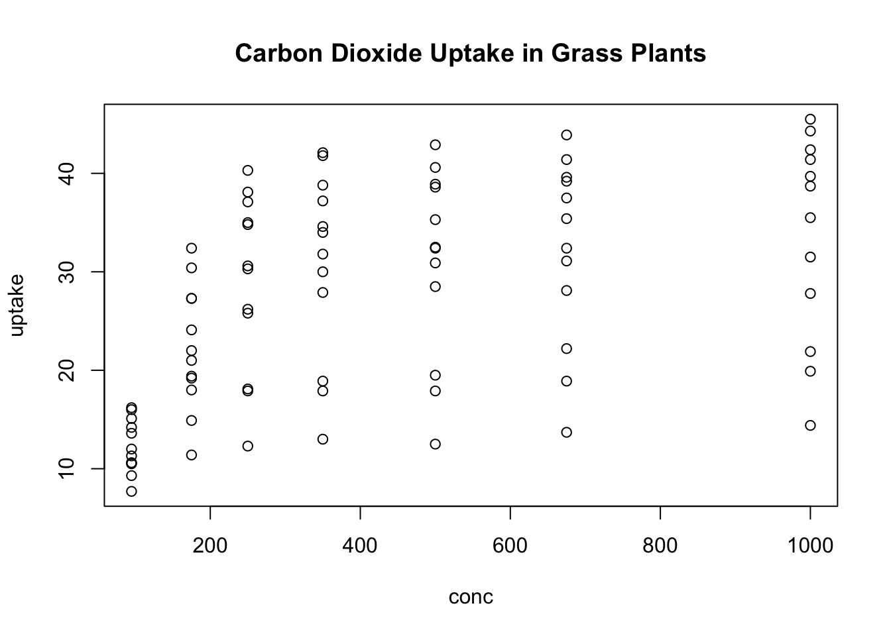
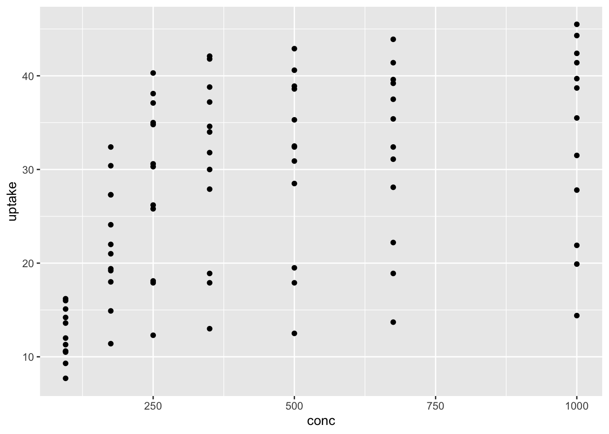
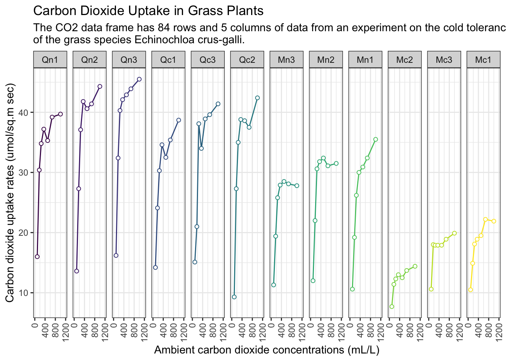

graphics.off()
rm(list = ls())
gc() used (Mb) gc trigger (Mb) limit (Mb) max used (Mb)
Ncells 578397 30.9 1317862 70.4 NA 669400 35.8
Vcells 1056716 8.1 8388608 64.0 16384 1851702 14.2I usually use the following code for initialization. If you don’t want to remove plots and/or variables, you can skip it.
graphics.off()
rm(list = ls())
gc() used (Mb) gc trigger (Mb) limit (Mb) max used (Mb)
Ncells 578397 30.9 1317862 70.4 NA 669400 35.8
Vcells 1056716 8.1 8388608 64.0 16384 1851702 14.2version _
platform aarch64-apple-darwin20
arch aarch64
os darwin20
system aarch64, darwin20
status
major 4
minor 3.1
year 2023
month 06
day 16
svn rev 84548
language R
version.string R version 4.3.1 (2023-06-16)
nickname Beagle Scouts We want to use as few packages (some might call them “libraries”) as possible. If possible, I’m going to use only the tidyverse package. Tidyverse is one of the most famous packages in R programming, and it’s really powerful and useful.
library(tidyverse)── Attaching core tidyverse packages ──────────────────────── tidyverse 2.0.0 ──
✔ dplyr 1.1.2 ✔ readr 2.1.4
✔ forcats 1.0.0 ✔ stringr 1.5.0
✔ ggplot2 3.4.2 ✔ tibble 3.2.1
✔ lubridate 1.9.2 ✔ tidyr 1.3.0
✔ purrr 1.0.1
── Conflicts ────────────────────────────────────────── tidyverse_conflicts() ──
✖ dplyr::filter() masks stats::filter()
✖ dplyr::lag() masks stats::lag()
ℹ Use the conflicted package (<http://conflicted.r-lib.org/>) to force all conflicts to become errorsWhen I write posts in my blog, I use the built-in dataset because I don’t want the reader to suffer by having to find the data from somewhere else.
The dataset I’ll be using in this post is shown below ⬇️ .
Carbon Dioxide Uptake in Grass Plants
The CO2 data frame has 84 rows and 5 columns of data from an experiment on the cold tolerance of the grass species Echinochloa crus-galli.
CO2
An object of class c(“nfnGroupedData”, “nfGroupedData”, “groupedData”, “data.frame”) containing the following columns:
Plant an ordered factor with levels Qn1 < Qn2 < Qn3 < … < Mc1 giving a unique identifier for each plant.
Type a factor with levels Quebec Mississippi giving the origin of the plant
Treatment a factor with levels nonchilled chilled
conc a numeric vector of ambient carbon dioxide concentrations (mL/L).
uptake a numeric vector of carbon dioxide uptake rates (\(\mu\)mol/\(m^2\)sec).
The \(CO_2\) uptake of six plants from Quebec and six plants from Mississippi was measured at several levels of ambient \(CO_2\) concentration. Half the plants of each type were chilled overnight before the experiment was conducted.
This dataset was originally part of package nlme, and that has methods (including for [, as.data.frame, plot and print) for its grouped-data classes.
CO2 |> head() Plant Type Treatment conc uptake
1 Qn1 Quebec nonchilled 95 16.0
2 Qn1 Quebec nonchilled 175 30.4
3 Qn1 Quebec nonchilled 250 34.8
4 Qn1 Quebec nonchilled 350 37.2
5 Qn1 Quebec nonchilled 500 35.3
6 Qn1 Quebec nonchilled 675 39.2CO2 |> class()[1] "nfnGroupedData" "nfGroupedData" "groupedData" "data.frame" CO2 |> dim()[1] 84 5unique(CO2[,1:3]) Plant Type Treatment
1 Qn1 Quebec nonchilled
8 Qn2 Quebec nonchilled
15 Qn3 Quebec nonchilled
22 Qc1 Quebec chilled
29 Qc2 Quebec chilled
36 Qc3 Quebec chilled
43 Mn1 Mississippi nonchilled
50 Mn2 Mississippi nonchilled
57 Mn3 Mississippi nonchilled
64 Mc1 Mississippi chilled
71 Mc2 Mississippi chilled
78 Mc3 Mississippi chilledplot(CO2)
CO2 |>
ggplot(aes(conc, uptake)) +
geom_point()CO2 |>
ggplot(aes(conc, uptake)) +
geom_path() +
geom_point(shape = 21, fill = "white", color = "black") +
facet_wrap(vars(Plant), nrow = 1)
CO2 |>
ggplot(aes(conc, uptake, color = Plant)) +
geom_path(show.legend = FALSE) +
geom_point(aes(color = Plant), shape = 21, fill = "white", show.legend = FALSE) +
facet_wrap(vars(Plant), nrow = 1) +
scale_x_continuous(limits = c(0,1200), breaks = seq(0,1200,400)) +
labs(title = "Carbon Dioxide Uptake in Grass Plants",
subtitle = paste0("The CO2 data frame has 84 rows and 5 columns of data from an experiment on the cold tolerance","\n" ,
"of the grass species Echinochloa crus-galli."),
x = "Ambient carbon dioxide concentrations (mL/L)",
y = "Carbon dioxide uptake rates (umol/sq.m sec)",
color = "Legend") +
theme_bw() +
theme(axis.text.x = element_text(angle = 90, hjust = 1, vjust = 0.5))CO2 |>
ggplot(aes(conc, uptake, group = Plant, label = Plant)) +
# path color sets by color name then determine color in scale_color_manual()
geom_path(data = subset(CO2, Plant != "Mn1"), aes(color = "Others"), linewidth = 1, lty = 2) +
geom_path(data = subset(CO2, Plant == "Mn1"), aes(color = "Mn1"), linewidth = 1, lty = 1) +
# point color determines in geom_point() directly
geom_point(data = subset(CO2, Plant != "Mn1"), shape = 21, fill = "white", color = "gray") +
geom_point(data = subset(CO2, Plant == "Mn1"), shape = 21, fill = "white", color = "coral") +
scale_color_manual(values = c("Others" = "gray80","Mn1" = "coral")) +
labs(title = "Carbon Dioxide Uptake in Grass Plants",
subtitle = paste0("The CO2 data frame has 84 rows and 5 columns of data from an experiment on the cold tolerance","\n" ,
"of the grass species Echinochloa crus-galli."),
x = "Ambient carbon dioxide concentrations (mL/L)",
y = "Carbon dioxide uptake rates (umol/sq.m sec)",
color = "Legend") +
theme_bw() +
theme(legend.position = c(0.9, 0.15), # Caution!!! it is relative position ex) 0: left end ~ 1: right end
legend.background = element_rect(fill = "white"),
legend.box.background = element_rect(color = "black"))
df <-
CO2 |>
mutate(category = case_when(str_detect(Plant, "Qn") ~ "Qn",
str_detect(Plant, "Qc") ~ "Qc",
str_detect(Plant, "Mn") ~ "Mn",
str_detect(Plant, "Mc") ~ "Mc",
.default = "Unknown"))
df |> head() Plant Type Treatment conc uptake category
1 Qn1 Quebec nonchilled 95 16.0 Qn
2 Qn1 Quebec nonchilled 175 30.4 Qn
3 Qn1 Quebec nonchilled 250 34.8 Qn
4 Qn1 Quebec nonchilled 350 37.2 Qn
5 Qn1 Quebec nonchilled 500 35.3 Qn
6 Qn1 Quebec nonchilled 675 39.2 Qndf |>
ggplot(aes(conc, uptake, color = Plant)) +
geom_path(show.legend = FALSE) +
geom_point(aes(color = Plant), shape = 21, fill = "white", show.legend = FALSE) +
facet_wrap(vars(category), nrow = 1) +
labs(title = "Carbon Dioxide Uptake in Grass Plants",
subtitle = paste0("The CO2 data frame has 84 rows and 5 columns of data from an experiment on the cold tolerance","\n" ,
"of the grass species Echinochloa crus-galli."),
x = "Ambient carbon dioxide concentrations (mL/L)",
y = "Carbon dioxide uptake rates (umol/sq.m sec)",
color = "Legend") +
theme_bw()
df |>
ggplot(aes(conc, uptake, color = Plant)) +
geom_path(show.legend = FALSE) +
geom_point(aes(color = Plant), shape = 21, fill = "white", show.legend = FALSE) +
facet_wrap(vars(category, Plant), ncol = 4, dir = "v", labeller = labeller(.multi_line = FALSE)) +
labs(title = "Carbon Dioxide Uptake in Grass Plants",
subtitle = paste0("The CO2 data frame has 84 rows and 5 columns of data from an experiment on the cold tolerance","\n" ,
"of the grass species Echinochloa crus-galli."),
x = "Ambient carbon dioxide concentrations (mL/L)",
y = "Carbon dioxide uptake rates (umol/sq.m sec)",
color = "Legend") +
theme_bw()
END OF POST